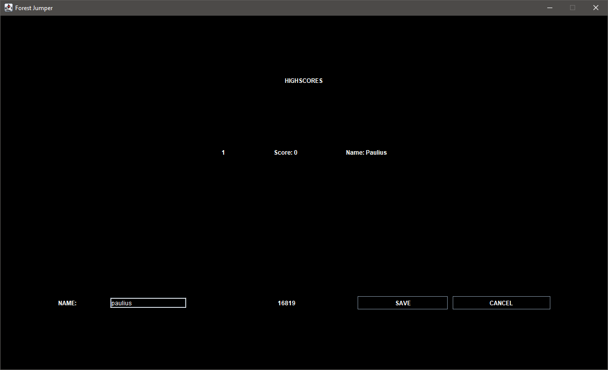
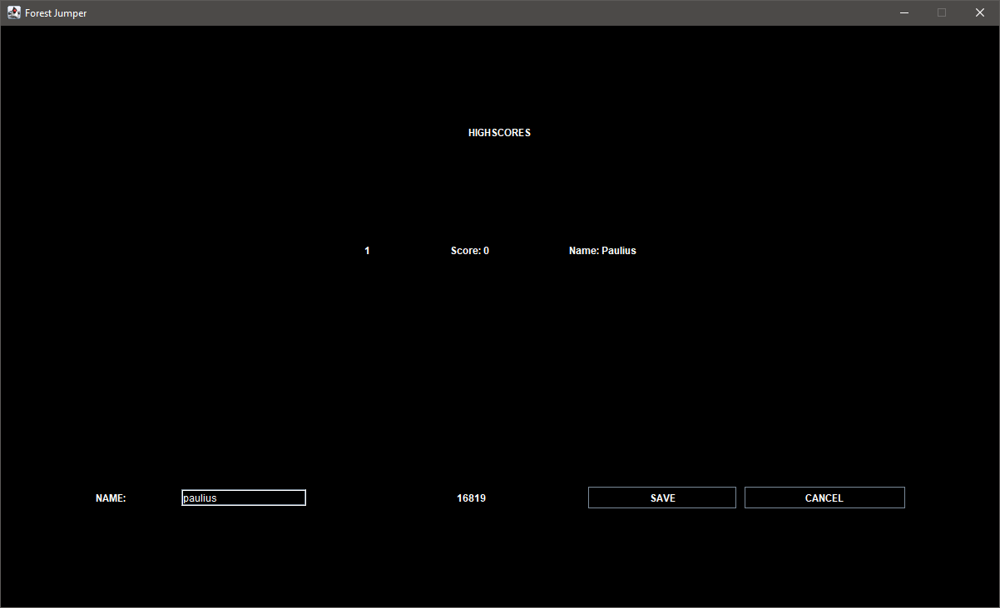

Forest Jumper
This project was completed for a Java module during my 1st year of university. I created a platform
game with levels, sound, a GUI and a save/load feature. In this project, I demonstarted an understanding of an
object-oriented language features such as inheritance and encapsulation.
I had to import a physic engine provided to me by the university. Then I started by playing around with the basic
features such as collision to walk on the floor and collect coins. Once I was able to end the game when a level
was completed, I added villains and increased the number of levels. The villains would remove the player's lives and
make the player start the level from the beginning if they collide. I also added instructions and the ability to
pause the game.
Although the game was functioning, I wanted to make it more polished. To do this, I added a powerup, sound and a GUI.
The powerup was a bomb that the player had to pick up to kill the villains. Every time I added a new sound clip, I
surrounded it with a try-catch block. This was so I could print an exception to the console if there were errors. As
I was creating the GUI, I decided to add 3 difficulties and a low gravity mode. The difficulties would change the
speed of the villains and the low gravity mode would edit the simulated gravity.
I also added a saving/loading feature and a high score table. If the game is being saved, it would save the necessary
information to a text file. When loading it back from the main menu, the game would look for that file and read it.
The high score table would also save and read from a text file. The table is presented when the player finishes the
game and a score can only be saved at this point. This is because the score is based on how long the player takes to
finish the game.
Something new that I learned from this project was how I can keep my program running even after it encounters an
error. I used try-catch blocks when introducing sound clips. My game shouldn't have to crash if a sound file wasn't
found because it's not an error that changes the game drastically. Something that I could have improved was my use
of comments and the tidiness of my code. When looking over my code during development, I found that I would
occasionally forget the functions of certain lines. Using comments would have allowed me to create reminders of what
those lines did. Tidier code would have also made tracking back quicker.
Check out the code on Github.


 
